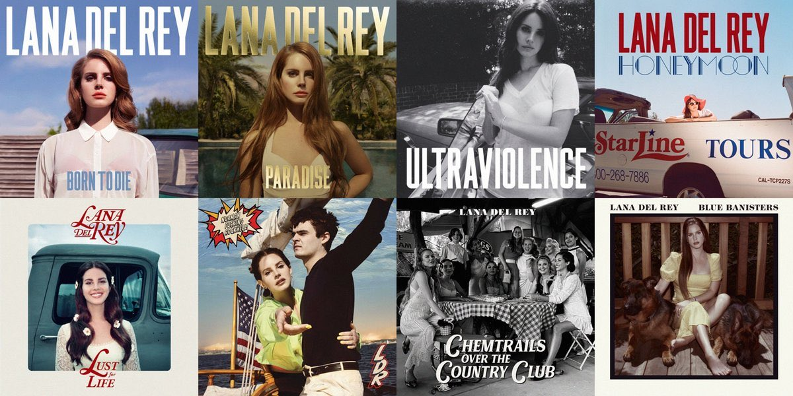
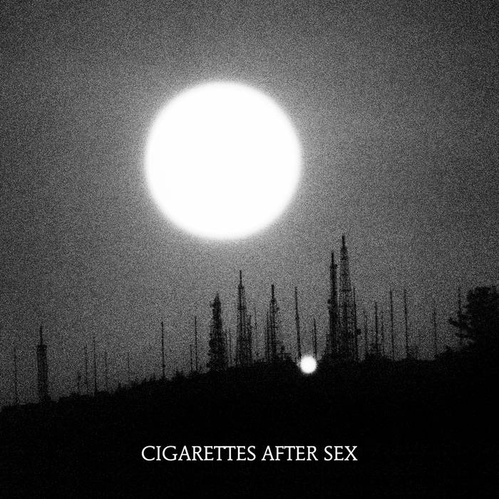
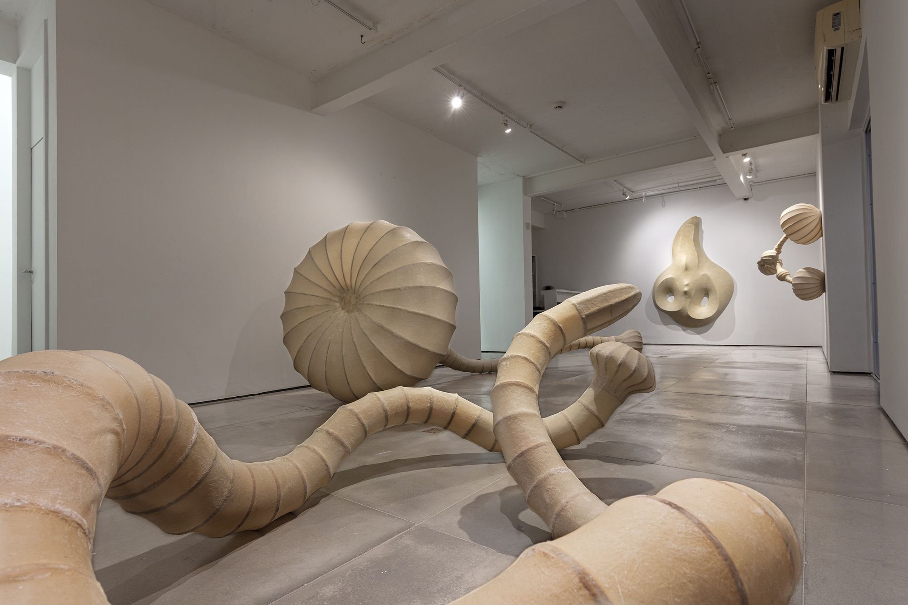

my name is jose luis vargas
here are some artists that inspire me
lana del rey

lana del rey effortlessly embraces various eras through her aesthetics, using cinematography to evoke nostalgia and capture the essence of past decades. Whether channeling the 1950s' glamour or the 1990s' edginess, she seamlessly blends music and visuals to match each era's mood. Beyond visuals, her profound emotional understanding of those times shines through. This fusion of music and cinematography showcases her as an artistic genius, connecting deeply with her audience while elegantly weaving historical elements into her unique narrative.
cigarettes after sex

cigarettes after sex excels in maintaining a consistent aesthetic while crafting songs that share a familiar sound, beat, and rhythm. what's truly impressive is their knack for introducing innovative changes without losing their defining essence. they expertly balance familiarity and evolution, captivating listeners who value both the comfort of the known and the thrill of the new.
angelo venosa

angelo venosa's artistic talent shines through in his amazing ability to bring balance and symmetry to shapes that are asymmetrical. this creates artworks of mesmerizing beauty. by skillfully working with different shapes and curves, venosa pushes the boundaries of traditional art. he combines elements that might seem different to create harmonious and pleasing compositions. this new way of doing things shows us that balance isn't just about making things the same, but also about blending contrasting elements in a thoughtful way. this special technique not only shows how skilled he is but also reveals that even in what seems chaotic, there can be hidden unity.